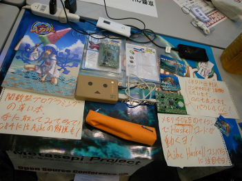
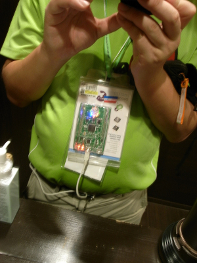
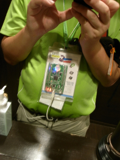

Metasepi作戦会議 第3回 議事録
Table of contents
Metasepi作戦会議 第3回を オープンソースカンファレンス2013 Kansai@Kyoto で開催したでゲソ。
今回の作戦会議はHaskellや組み込みマイコンに詳しくない人にもMetasepiプロジェクトとAjhcコンパイラの意義について解説してみたでゲソ。 いろんな人にワシのことを理解してもらえて嬉しかったゲソ! またアプリケーション例のアイデアももらったので、後で挑戦してみようと思うでゲソ!
発表資料
組込向けHaskellコンパイラAjhc / POSIX依存から脱出しよう編 - @masterq_teokure
Ajhc Hacking Guide本の執筆環境 - @masterq_teokure
会議の雰囲気
  

blog comments powered by